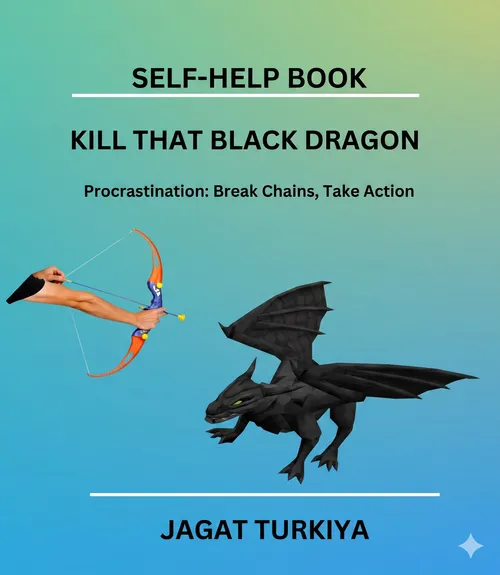
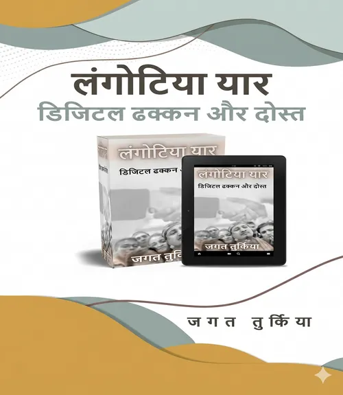
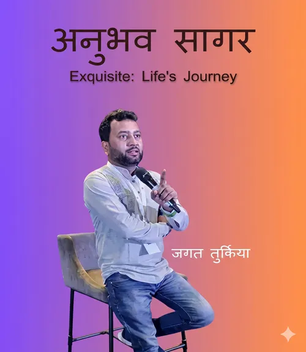
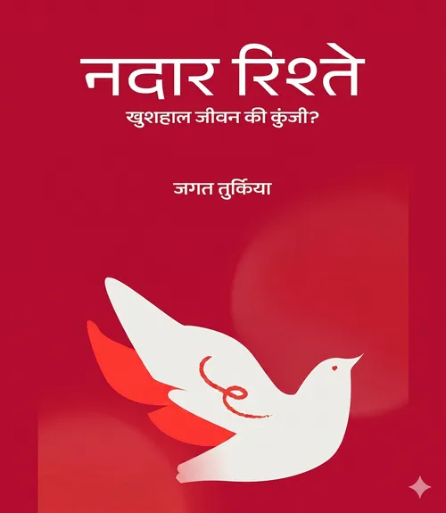

Earning ₹5L to ₹10L+ a month is an offense. Keeping it and compounding it is defense. Without a system, high income just creates bigger mistakes at higher speeds. Mastermind installs the institutional clarity and execution roadmap usually kept behind closed doors.
You don’t need another generic finance podcast. You need a stress-tested financial operating system.
Making ₹10 lakh a month is exciting. Wondering where ₹7 lakh of it evaporated by day 28 is not. We audit your numbers, eradicate hidden lifestyle creep, and turn messy cash drag into an automated compounding surplus.
Defense comes before offense. We audit your emergency runway, stress-test your liability exposure, and build a fortress around your family so market crashes never jeopardize your peace of mind.
Stop buying random stocks because someone on WhatsApp made a quick gain. We build a clean, disciplined portfolio engine customized to your exact timeline, family milestones, and genuine risk capacity.
Ego and FOMO kill more fortunes than bad markets ever will. We install an objective decision checklist that removes emotional impulse, letting you evaluate every major financial move with ice-cold clarity.
A structured, week-by-week execution roadmap taking your personal finances from fragmentation to complete institutional order.
A surgical baseline audit across active cash, debt commitments, scattered investments, and identifying root financial friction points.
Tracking the true velocity of your capital. Plugging silent monthly leaks and locking in automated savings gates.
Turning vague wishes into dated milestones: liquid emergency runways, child education, and inflation-adjusted retirement.
Tuning out the media circus. Installing an objective asset framework tailored directly to your tax bracket, timeline, and risk appetite.
Locking down downside defense. Multi-year liquid reserves, liability hedges, and eliminating catastrophic family risks.
Harmonizing disconnected assets into a single compounding machine balancing capital growth, income, and liquidity defense.
Killing analysis paralysis. Equipping you with an actionable filter to assess future opportunities without guesswork or stress.
Translating all modules into a bespoke blueprint engineered specifically around your family values, lifestyle, and legacy.
Real-world execution. Reallocating capital, deploying automated loops, and stress-testing your plan under market shocks.
Full financial sovereignty. Deploying our proprietary diagnostic tool to audit your health score and navigate the decades ahead.
5 published books authored by Jagat Turkiya on human psychology, conquering hesitation, grassroots resilience, and family harmony.

Procrastination isn’t laziness; it’s an emotional avoidance loop. Jagat provides surgical 5-minute action triggers to conquer chronic hesitation and build an unstoppable daily execution engine.
Heartfelt, real-life chronicles of everyday individuals who refused to surrender to poverty, disability, and societal odds, rising through quiet perseverance and grit.

Preserving unconditional companionship and emotional brotherhood in an era dominated by superficial social media reactions, algorithmic distraction, and modern isolation.

A distillation of timeless principles gathered over 15+ years of strategic mentoring on mastering ego, emotional sovereignty, and navigating personal turning points.

Untangling generational misunderstandings and marital strain to construct peaceful, trusting family bonds that weather life's financial and emotional storms.
Looking to publish your own transformational book or consult directly on family and personal harmony? Connect with the advisory desk.
Inquire for ConsultationAn end-to-end transformation system with active personal handholding and execution accountability.
Due to intense time commitments, Jagat Turkiya and his advisory team work only with qualified applicants who meet cohort criteria.
Fill out the confidential evaluation form with your current financial baseline, challenges, and core objectives.
A 30-minute private strategy evaluation with Jagat Turkiya’s executive advisory team to audit your numbers and evaluate cohort suitability.
Approved candidates receive an invitation to join the 10-week curriculum with direct advisory handholding.
Diagnostic technology and enterprise leadership incubation founded by Jagat Turkiya.
A specialized digital diagnostic tool designed to evaluate your current financial fitness. It audits net cash flow, highlights hidden leakages, and simulates runway buffers.
An enterprise coach incubator founded by Jagat Turkiya to scale transformational mentorship, equipping executive leaders and consultants with institutional frameworks.
Everything you need to know about the 10-week curriculum, cohort standards, and outcomes.
The Mastermind is engineered specifically for salaried leaders, startup founders, and enterprise consultants earning ₹5 Lakh to ₹25+ Lakh a month. If you’ve solved the problem of earning money but feel your wealth is slipping through silent leaks, or lacks an institutional defense structure, this room is for you.
2 to 3 hours per week. We know your calendar is packed. You spend 90 minutes in the core weekly strategy masterclass with Jagat Turkiya and your peers, plus 45 minutes completing your weekly system execution blueprint. No busywork, only high-leverage decisions.
It is 100% tailored to your actual numbers. We run a comprehensive audit across your income velocity, tax brackets, liability moats, and family goals to build your personalized Wealth Compass blueprint. You leave with an institutional wealth machine operating in real life.
Jagat leads the weekly live sessions personally, conducting live hot-seats, portfolio reviews, and mindset breakthroughs. In addition, our executive advisory desk provides ongoing async feedback and operational support throughout the 10 weeks.
High-status advisory requires intense personal attention. We refuse to run 200-person webinars. Keeping cohorts capped at 12 ensures every member gets their balance sheet scrutinized, their questions resolved, and private peer bonding with equally accomplished leaders.
Cohorts fill on a rolling qualification basis. Submit your private application today to schedule your strategy evaluation with the advisory team.
Apply for Strategy Evaluation